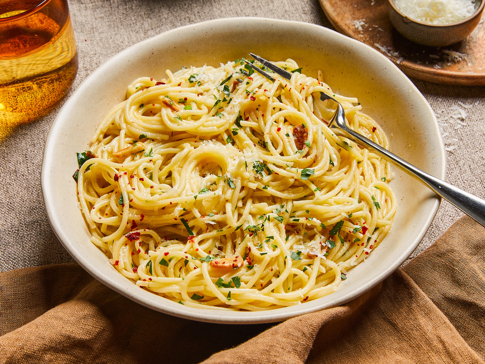

Classic Spaghetti Aglio e Olio
This traditional Italian pasta is simple yet packed with flavor — made with garlic, olive oil, chili flakes, and parsley.
Ingredients
- 200g spaghetti
- 4 garlic cloves (thinly sliced)
- 1/4 cup olive oil
- 1 tsp chili flakes
- 2 tbsp chopped parsley
- Salt to taste
Instructions
- Boil spaghetti in salted water until al dente. Reserve ½ cup pasta water.
- Heat olive oil in a pan, add garlic and chili flakes until fragrant.
- Add cooked spaghetti and toss with reserved water.
- Mix in parsley, season, and serve warm.
Nutritional Info
Calories: 420 | Protein: 10g | Carbs: 60g | Fat: 15g
Allergens
Contains wheat (gluten). Suitable for vegetarians.

General Pasta Tips
- Always salt your pasta water—it’s the key to flavor.
- Reserve some pasta water to create smooth sauces.
- Don’t overcook—pasta should be slightly firm (al dente).